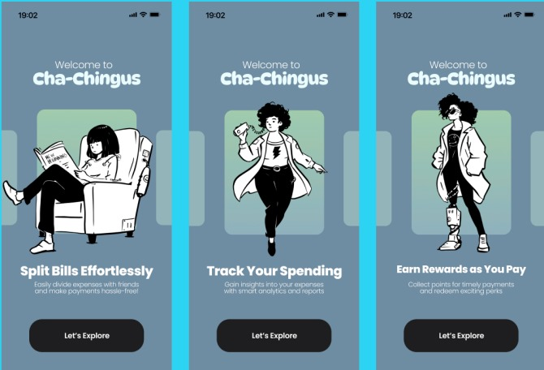
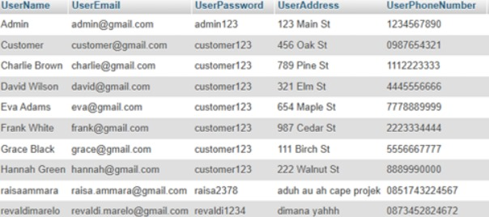

Portofolio Proyek
Halo! Selamat datang di tempat saya berbagi karya. Setiap proyek di sini adalah cerita tentang bagaimana saya mengubah tantangan menjadi solusi kreatif.

Cha-Chingus
Cha-Chingus adalah aplikasi mobile yang dirancang untuk menyederhanakan pembagian biaya untuk rencana kelompok.
BoxBox+
Boxbox+ adalah prototype aplikasi yang saya buat untuk memenuhi nilai proyek mata kuliah UI/UX.

Florarity
Sebuah aplikasi manajemen toko bunga dengan integrasi database, dikembangkan menggunakan Java.

LocalFarmer
LocalFarmer adalah sebuah soal proyek yang saya kerjakan berkaitan dengan database aplikasi yang menghubungkan petani lokal dengan konsumen.